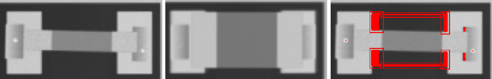
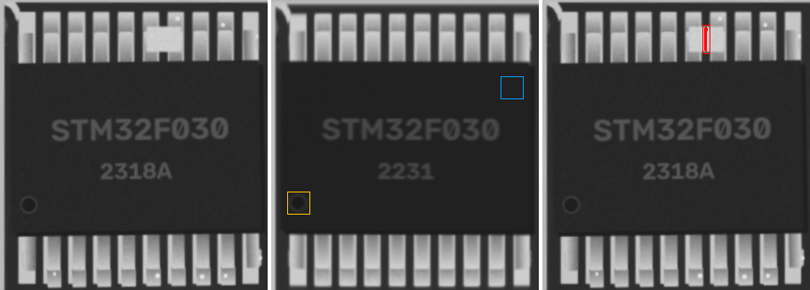
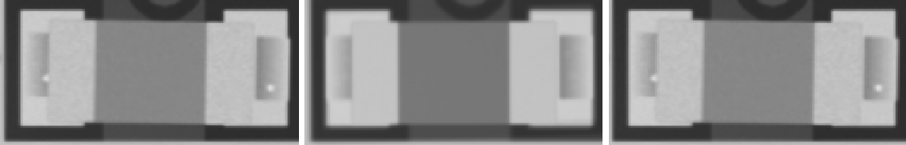

4u7 · 1206
MISMATCH

ncc 0.724 · ncc_thr 0.6 · mad 32.7 · mad_thr 8.4 · dx_mm -0.047 · dy_mm -0.023 · dtheta_deg -0.0 · anomaly_px 1031
LED_0805 · LED_0805
ANOMALY

ncc 0.968 · ncc_thr 0.6 · ncc_180 0.764 · mad 6.0 · mad_thr 8.2 · mark_ncc {'0': -0.012, '180': -0.067} · dx_mm 0.0 · dy_mm -0.093 · dtheta_deg -0.0 · anomaly_px 113
W1 · SOT-23
ANOMALY

ncc 0.726 · ncc_thr 0.6 · ncc_180 0.309 · mad 4.5 · mad_thr 7.1 · mad_180 25.4 · dx_mm 0.0 · dy_mm -0.14 · dtheta_deg -0.0 · anomaly_px 359
220 · 0603
MISSING

ncc 0.8 · ncc_thr 0.6 · mad 18.2 · mad_thr 10.2 · dx_mm 0.558 · dy_mm 0.0 · dtheta_deg -2.0 · anomaly_px 400
STM32F030 · TSSOP-20
ANOMALY

ncc 0.916 · ncc_thr 0.6 · ncc_180 0.738 · mad 2.5 · mad_thr 7.6 · mark_ncc {'0': 0.403, '180': 0.002} · dx_mm 0.0 · dy_mm 0.047 · dtheta_deg -0.0 · anomaly_px 85
100u · CP_Elec_5x5.8
ncc 0.996 · ncc_thr 0.6 · mad 1.7 · mad_thr 8.6 · mark_ncc {'0': 0.997, '180': -0.289} · dx_mm 0.047 · dy_mm 0.0 · dtheta_deg -0.0 · anomaly_px 0
22p · 0805
ncc 0.975 · ncc_thr 0.6 · mad 5.3 · mad_thr 8.4 · dx_mm 0.0 · dy_mm 0.0 · dtheta_deg -0.0 · anomaly_px 0
22p · 0402
ncc 0.96 · ncc_thr 0.6 · mad 6.1 · mad_thr 12.9 · dx_mm 0.023 · dy_mm 0.047 · dtheta_deg 2.0 · anomaly_px 0
4u7 · 0402
ncc 0.972 · ncc_thr 0.6 · mad 5.8 · mad_thr 9.4 · dx_mm 0.0 · dy_mm 0.023 · dtheta_deg -0.0 · anomaly_px 0
100n · 1206

ncc 0.968 · ncc_thr 0.6 · mad 4.1 · mad_thr 8.0 · dx_mm 0.023 · dy_mm 0.0 · dtheta_deg -0.0 · anomaly_px 0
100n · 0603
ncc 0.975 · ncc_thr 0.6 · mad 6.2 · mad_thr 9.3 · dx_mm -0.023 · dy_mm 0.023 · dtheta_deg -0.0 · anomaly_px 0
10u · 0805
ncc 0.961 · ncc_thr 0.6 · mad 5.0 · mad_thr 8.3 · dx_mm -0.07 · dy_mm 0.023 · dtheta_deg -0.0 · anomaly_px 0
4u7 · 0603
ncc 0.973 · ncc_thr 0.6 · mad 6.5 · mad_thr 9.4 · dx_mm -0.023 · dy_mm 0.0 · dtheta_deg -0.0 · anomaly_px 0
10u · 0603
ncc 0.979 · ncc_thr 0.6 · mad 6.1 · mad_thr 10.7 · dx_mm 0.0 · dy_mm 0.0 · dtheta_deg -0.0 · anomaly_px 0
100n · 0402
ncc 0.933 · ncc_thr 0.6 · mad 7.2 · mad_thr 12.8 · dx_mm 0.023 · dy_mm -0.023 · dtheta_deg -2.0 · anomaly_px 0
1u · 0402
ncc 0.958 · ncc_thr 0.6 · mad 7.8 · mad_thr 10.6 · dx_mm -0.023 · dy_mm 0.0 · dtheta_deg -0.0 · anomaly_px 0
Tantalum_Case-A · Tantalum_Case-A
ncc 0.982 · ncc_thr 0.6 · mad 3.6 · mad_thr 8.4 · mark_ncc {'0': 0.996, '180': 0.26} · dx_mm 0.0 · dy_mm 0.0 · dtheta_deg -0.0 · anomaly_px 0
22p · 0402
ncc 0.944 · ncc_thr 0.6 · mad 6.9 · mad_thr 11.4 · dx_mm 0.047 · dy_mm -0.023 · dtheta_deg -2.0 · anomaly_px 0
22p · 0603
ncc 0.966 · ncc_thr 0.6 · mad 6.4 · mad_thr 8.7 · dx_mm 0.0 · dy_mm 0.0 · dtheta_deg -0.0 · anomaly_px 0
4u7 · 0603
ncc 0.979 · ncc_thr 0.6 · mad 6.7 · mad_thr 9.6 · dx_mm 0.0 · dy_mm 0.0 · dtheta_deg -0.0 · anomaly_px 0
10u · 0603
ncc 0.96 · ncc_thr 0.6 · mad 6.1 · mad_thr 9.9 · dx_mm 0.023 · dy_mm 0.023 · dtheta_deg -0.0 · anomaly_px 0
1u · 0805
ncc 0.968 · ncc_thr 0.6 · mad 5.1 · mad_thr 8.3 · dx_mm -0.023 · dy_mm -0.07 · dtheta_deg -0.0 · anomaly_px 0
4u7 · 0402
ncc 0.978 · ncc_thr 0.6 · mad 6.9 · mad_thr 10.2 · dx_mm 0.0 · dy_mm 0.0 · dtheta_deg -0.0 · anomaly_px 0
4u7 · 0805
ncc 0.967 · ncc_thr 0.6 · mad 5.4 · mad_thr 8.3 · dx_mm 0.023 · dy_mm 0.023 · dtheta_deg -0.0 · anomaly_px 0
10u · 1206
ncc 0.967 · ncc_thr 0.6 · mad 4.2 · mad_thr 8.3 · dx_mm 0.023 · dy_mm 0.047 · dtheta_deg -0.0 · anomaly_px 0
4u7 · 1206
ncc 0.969 · ncc_thr 0.6 · mad 3.9 · mad_thr 8.6 · dx_mm 0.0 · dy_mm 0.023 · dtheta_deg -0.0 · anomaly_px 0
SOD-123 · SOD-123
ncc 0.987 · ncc_thr 0.6 · mad 1.3 · mad_thr 7.0 · mark_ncc {'0': 0.991, '180': 0.038} · dx_mm -0.07 · dy_mm -0.023 · dtheta_deg -0.0 · anomaly_px 0
SOD-123 · SOD-123
ncc 0.985 · ncc_thr 0.6 · mad 0.9 · mad_thr 7.0 · mark_ncc {'0': 0.619, '180': 0.084} · dx_mm -0.023 · dy_mm 0.023 · dtheta_deg -0.0 · anomaly_px 0
LED_0805 · LED_0805
ncc 0.976 · ncc_thr 0.6 · ncc_180 0.774 · mad 5.4 · mad_thr 9.6 · mark_ncc {'0': 0.09, '180': 0.062} · dx_mm 0.047 · dy_mm -0.07 · dtheta_deg -0.0 · anomaly_px 0
LED_0805 · LED_0805
ncc 0.985 · ncc_thr 0.6 · ncc_180 0.829 · mad 5.8 · mad_thr 9.3 · mark_ncc {'0': -0.136, '180': -0.017} · dx_mm -0.047 · dy_mm 0.047 · dtheta_deg -0.0 · anomaly_px 0
LED_0805 · LED_0805
ncc 0.973 · ncc_thr 0.6 · ncc_180 0.763 · mad 6.2 · mad_thr 9.3 · mark_ncc {'0': -0.019, '180': 0.008} · dx_mm 0.07 · dy_mm -0.023 · dtheta_deg -0.0 · anomaly_px 0
LED_0805 · LED_0805
ncc 0.981 · ncc_thr 0.6 · ncc_180 0.801 · mad 4.8 · mad_thr 8.2 · mark_ncc {'0': -0.078, '180': -0.126} · dx_mm 0.0 · dy_mm 0.047 · dtheta_deg -0.0 · anomaly_px 0
LED_0805 · LED_0805
ncc 0.986 · ncc_thr 0.6 · ncc_180 0.826 · mad 4.7 · mad_thr 8.3 · mark_ncc {'0': -0.024, '180': -0.042} · dx_mm -0.023 · dy_mm -0.023 · dtheta_deg -0.0 · anomaly_px 0
4u7 · L_4x4
ncc 0.982 · ncc_thr 0.6 · mad 5.8 · mad_thr 9.2 · dx_mm 0.047 · dy_mm 0.0 · dtheta_deg -0.0 · anomaly_px 0
4u7 · L_4x4
ncc 0.974 · ncc_thr 0.6 · mad 1.4 · mad_thr 7.1 · dx_mm -0.023 · dy_mm 0.0 · dtheta_deg -0.0 · anomaly_px 0
J3Y · SOT-23
ncc 0.905 · ncc_thr 0.6 · ncc_180 0.534 · mad 1.7 · mad_thr 7.2 · mad_180 5.8 · dx_mm 0.07 · dy_mm 0.047 · dtheta_deg 2 · anomaly_px 0
A7 · SOT-23
ncc 0.963 · ncc_thr 0.6 · ncc_180 0.463 · mad 1.2 · mad_thr 7.3 · mad_180 8.3 · dx_mm -0.023 · dy_mm 0.023 · dtheta_deg -0.0 · anomaly_px 0
A7 · SOT-23
ncc 0.966 · ncc_thr 0.6 · ncc_180 0.364 · mad 1.1 · mad_thr 7.1 · mad_180 14.4 · dx_mm -0.023 · dy_mm 0.093 · dtheta_deg -2.0 · anomaly_px 0
S4 · SOT-23
ncc 0.963 · ncc_thr 0.6 · ncc_180 0.682 · mad 2.0 · mad_thr 7.2 · mad_180 3.9 · dx_mm 0.0 · dy_mm 0.047 · dtheta_deg -0.0 · anomaly_px 0
J3Y · SOT-23
ncc 0.962 · ncc_thr 0.6 · ncc_180 0.366 · mad 1.0 · mad_thr 7.1 · mad_180 3.5 · dx_mm 0.0 · dy_mm -0.07 · dtheta_deg -0.0 · anomaly_px 0
W1 · SOT-23
ncc 0.962 · ncc_thr 0.6 · ncc_180 0.306 · mad 1.0 · mad_thr 7.0 · mad_180 9.5 · dx_mm 0.0 · dy_mm 0.07 · dtheta_deg -0.0 · anomaly_px 0
J3Y · SOT-23
ncc 0.938 · ncc_thr 0.6 · ncc_180 0.334 · mad 1.0 · mad_thr 7.0 · mad_180 20.2 · dx_mm 0.0 · dy_mm 0.0 · dtheta_deg -0.0 · anomaly_px 0
J3Y · SOT-23
ncc 0.981 · ncc_thr 0.6 · ncc_180 0.276 · mad 1.0 · mad_thr 7.0 · mad_180 25.6 · dx_mm 0.0 · dy_mm -0.047 · dtheta_deg -0.0 · anomaly_px 0
10k · 0402
ncc 0.971 · ncc_thr 0.6 · mad 7.0 · mad_thr 19.3 · dx_mm 0.0 · dy_mm 0.047 · dtheta_deg -0.0 · anomaly_px 0
1k · 0603
ncc 0.972 · ncc_thr 0.6 · mad 5.0 · mad_thr 10.2 · dx_mm 0.0 · dy_mm -0.023 · dtheta_deg -0.0 · anomaly_px 0
220 · 0402
ncc 0.991 · ncc_thr 0.6 · mad 7.7 · mad_thr 15.2 · dx_mm 0.0 · dy_mm 0.0 · dtheta_deg -0.0 · anomaly_px 0
10k · 0603
ncc 0.963 · ncc_thr 0.6 · mad 7.9 · mad_thr 10.4 · dx_mm 0.0 · dy_mm 0.0 · dtheta_deg -0.0 · anomaly_px 0
0R · 0805
ncc 0.955 · ncc_thr 0.6 · mad 6.8 · mad_thr 9.3 · dx_mm -0.047 · dy_mm 0.0 · dtheta_deg -2.0 · anomaly_px 0
4k7 · 0603
ncc 0.966 · ncc_thr 0.6 · mad 6.8 · mad_thr 10.2 · dx_mm 0.07 · dy_mm 0.0 · dtheta_deg -0.0 · anomaly_px 0
4k7 · 0402
ncc 0.986 · ncc_thr 0.6 · mad 9.0 · mad_thr 16.1 · dx_mm -0.047 · dy_mm 0.0 · dtheta_deg 2.0 · anomaly_px 0
4k7 · 0805
ncc 0.951 · ncc_thr 0.6 · mad 7.6 · mad_thr 9.4 · dx_mm -0.07 · dy_mm 0.0 · dtheta_deg -0.0 · anomaly_px 0
10k · 1206
ncc 0.952 · ncc_thr 0.6 · mad 4.6 · mad_thr 8.9 · dx_mm 0.023 · dy_mm 0.0 · dtheta_deg -0.0 · anomaly_px 0
220 · 0805
ncc 0.954 · ncc_thr 0.6 · mad 4.9 · mad_thr 9.3 · dx_mm 0.0 · dy_mm 0.023 · dtheta_deg -0.0 · anomaly_px 0
220 · 0603
ncc 0.945 · ncc_thr 0.6 · mad 7.9 · mad_thr 10.6 · dx_mm 0.07 · dy_mm -0.023 · dtheta_deg -2.0 · anomaly_px 0
10k · 1206
ncc 0.943 · ncc_thr 0.6 · mad 5.0 · mad_thr 8.8 · dx_mm -0.023 · dy_mm 0.047 · dtheta_deg -0.0 · anomaly_px 0
1k · 0805
ncc 0.95 · ncc_thr 0.6 · mad 6.1 · mad_thr 9.7 · dx_mm 0.0 · dy_mm 0.047 · dtheta_deg -0.0 · anomaly_px 0
1k · 0603
ncc 0.971 · ncc_thr 0.6 · mad 8.4 · mad_thr 13.0 · dx_mm -0.023 · dy_mm 0.0 · dtheta_deg -0.0 · anomaly_px 0
100k · 0805
ncc 0.952 · ncc_thr 0.6 · mad 5.6 · mad_thr 9.3 · dx_mm 0.047 · dy_mm 0.023 · dtheta_deg -0.0 · anomaly_px 0
10k · 0805
ncc 0.953 · ncc_thr 0.6 · mad 5.7 · mad_thr 9.5 · dx_mm -0.023 · dy_mm 0.047 · dtheta_deg -0.0 · anomaly_px 0
1k · 0402
ncc 0.986 · ncc_thr 0.6 · mad 4.8 · mad_thr 18.4 · dx_mm -0.047 · dy_mm 0.0 · dtheta_deg -0.0 · anomaly_px 0
4k7 · 0402
ncc 0.989 · ncc_thr 0.6 · mad 5.1 · mad_thr 14.9 · dx_mm 0.023 · dy_mm 0.023 · dtheta_deg -0.0 · anomaly_px 0
0R · 0805
ncc 0.946 · ncc_thr 0.6 · mad 7.7 · mad_thr 9.3 · dx_mm 0.07 · dy_mm -0.047 · dtheta_deg -0.0 · anomaly_px 0
GD32F303 · LQFP-48
ncc 0.92 · ncc_thr 0.6 · mad 1.8 · mad_thr 7.8 · mark_ncc {'0': 0.818, '90': 0.007, '180': -0.007, '270': -0.076} · dx_mm 0.047 · dy_mm 0.047 · dtheta_deg -0.0 · anomaly_px 0
24C02 · SOIC-8
ncc 0.969 · ncc_thr 0.6 · mad 1.5 · mad_thr 7.5 · mark_ncc {'0': 0.9, '180': 0.027} · dx_mm 0.0 · dy_mm -0.023 · dtheta_deg -0.0 · anomaly_px 0
ESP32-C3 · QFN-32
ncc 0.934 · ncc_thr 0.6 · mad 1.6 · mad_thr 7.4 · mark_ncc {'0': 0.915, '90': 0.079, '180': 0.006, '270': -0.112} · dx_mm 0.023 · dy_mm 0.023 · dtheta_deg -0.0 · anomaly_px 0
TL072 · SOIC-8
ncc 0.905 · ncc_thr 0.6 · mad 1.2 · mad_thr 7.2 · mark_ncc {'0': 0.909, '180': -0.13} · dx_mm -0.047 · dy_mm 0.047 · dtheta_deg 2.0 · anomaly_px 0
STM32F030 · TSSOP-20
ncc 0.95 · ncc_thr 0.6 · mad 1.2 · mad_thr 7.3 · mark_ncc {'0': 0.919, '180': 0.082} · dx_mm 0.0 · dy_mm 0.023 · dtheta_deg -0.0 · anomaly_px 0
STM8S105 · TQFP-32
ncc 0.949 · ncc_thr 0.6 · mad 1.7 · mad_thr 7.5 · mark_ncc {'0': 0.933, '90': 0.113, '180': 0.04, '270': -0.047} · dx_mm 0.0 · dy_mm 0.0 · dtheta_deg -0.0 · anomaly_px 0
AMS1117 · SOT-223
ncc 0.966 · ncc_thr 0.6 · ncc_180 0.364 · mad 1.3 · mad_thr 7.1 · mad_180 6.8 · dx_mm 0.0 · dy_mm 0.116 · dtheta_deg -0.0 · anomaly_px 0
LD1117 · SOT-223
ncc 0.972 · ncc_thr 0.6 · ncc_180 0.277 · mad 1.0 · mad_thr 7.1 · mad_180 7.4 · dx_mm -0.047 · dy_mm 0.047 · dtheta_deg -2.0 · anomaly_px 0
LD1117 · SOT-223
ncc 0.977 · ncc_thr 0.6 · ncc_180 0.387 · mad 1.3 · mad_thr 7.3 · mad_180 7.0 · dx_mm -0.07 · dy_mm -0.023 · dtheta_deg -0.0 · anomaly_px 0
Crystal_SMD_3225 · Crystal_SMD_3225
ncc 0.998 · ncc_thr 0.6 · mad 2.3 · mad_thr 9.1 · dx_mm -0.023 · dy_mm 0.0 · dtheta_deg -0.0 · anomaly_px 0